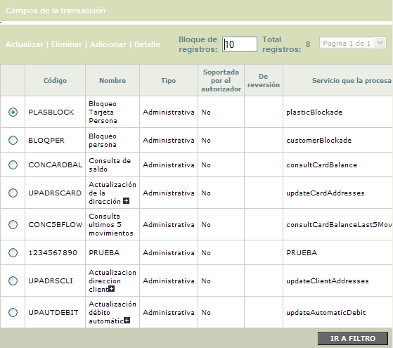
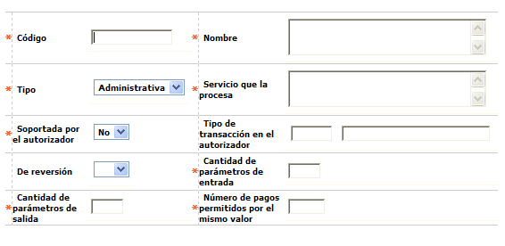
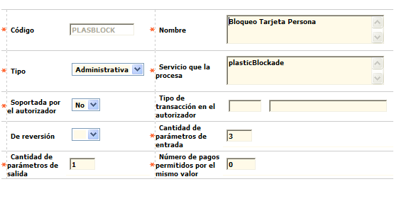
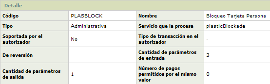
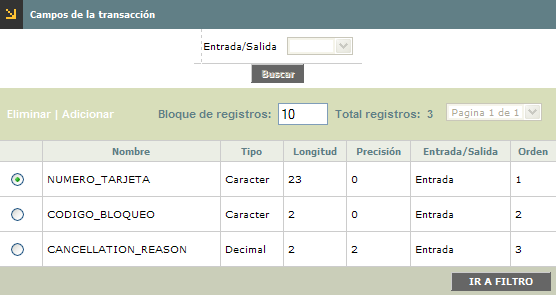
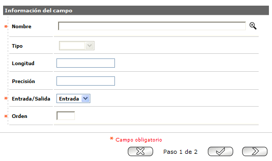
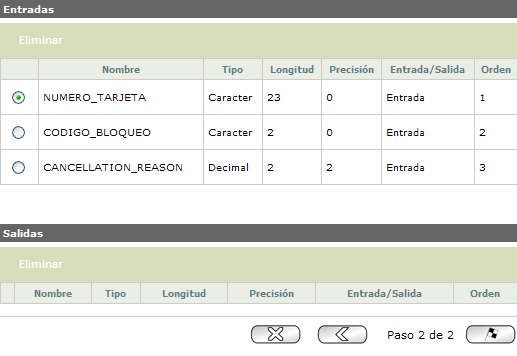

Datos transacción en línea |
Mediante esta opción se habilita la consulta y mantenimiento de la tabla en la cual se almacenan las transacciones monetarias y no monetarias que serán utilizadas por los canales certificados por la entidad. Cada transacción contiene un código, un nombre, un tipo, un indicador de soporte por el autorizador, un indicador de reversión y el servicio que lo procesa.
El formulario contiene las opciones Adicionar, Actualizar, Eliminar, Detalle y el vínculo Campos de la Transacción. Adicionalmente contiene un filtro que le permite al usuario consultar la información de las transacciones, de acuerdo a un código y/o nombre ingresados.

Adicionar: si el usuario invoca la opción adicionar se despliega el siguiente formulario:

| Código: | Campo alfanumérico de 10 posiciones, obligatorio, que corresponde al identificador de la transacción. |
| Nombre: | Campo alfanumérico de 70 posiciones, obligatorio, que corresponde al nombre de la transacción. |
| Tipo: | Campo que contiene los tipos de transacción. Los valores a seleccionar son Administrativa y Financiera. |
| Servicio que la procesa: | Campo alfanumérico de 10 posiciones, obligatorio, que identifica el nombre del servicio que se implementa y que procesa la transacción. |
| Soportada por el autorizador: | Campo obligatorio que contiene los valores no y si e indica si la transacción es soportada por el autorizador. Si este campo está en si, habilita el campo “Tipo de transacción en el autorizador”. |
| Tipo de transacción en el autorizador: | Este campo se habilita y se convierte en obligatorio únicamente si el campo “Soportada por el autorizador” está en si. Este campo contiene una lista de valores de la cuál se selecciona el tipo de transacción origen (pagos, consulta saldos, etc). |
| De reversión: | Campo que contiene los valores nulo, no y si e indica si la transacción es de reversión. Este campo se convierte en obligatorio al momento de diligenciar el campo tipo, con el dato 'Financiero', de lo contrario, no es obligatorio. |
| Cantidad de parámetros de entrada: | Campo numérico de 2 posiciones, obligatorio, que identifica la cantidad de parámetros de entrada que puede tener la transacción. |
| Cantidad de parámetros de salida: | Campo numérico de 2 posiciones, obligatorio, que identifica la cantidad de parámetros de salida que puede tener la transacción. |
| Número de pagos permitidos por el mismo valor: | Campo numérico de 3 posiciones, obligatorio, que identifica el número de pagos permitidos por el mismo valor. |
Actualizar: Si el usuario invoca la opción Actualizar se despliega el siguiente formulario:

El código de la transacción no es modificable.
Detalle: Si el usuario invoca la opción Detalle se despliega el siguiente formulario:

Campos de la transacción: Si el usuario invoca la opción Campos de la transacción se despliega el siguiente formulario:

Mediante esta opción se habilita la consulta de los campos tanto de entrada como de salida asociados a las diferentes transacciones que soporta el sistema. Esta pantalla permite ver la información correspondiente a la transacción y a los campos asociados a la misma. Cada campo asociado contiene un nombre, un tipo de campo, una longitud, una precisión, si es de entrada o salida y el orden.
El formulario contiene las opciones adicionar y eliminar. Adicionalmente contiene un filtro por tipo de entrada/salida para consultar los campos.
Adicionar: si el usuario invoca la opción adicionar, se despliega un wizard de dos pasos. En la primera página se registran y adicionan cada uno de los campos.

| Nombre: | Campo obligatorio con lista de valores del cual se selecciona el campo de va a ser asociado a la transacción. |
| Tipo: | Este campo no modificable muestra el tipo del campo (carácter, decimal, entero o fecha) y se llena automáticamente cuando se selecciona un registro de la lista de valores de campos. |
| Longitud: | Este campo no modificable muestra la longitud del campo y se llena automáticamente cuando se selecciona un registro de la lista de valores de campos. |
| Precisión: | Este campo no modificable muestra la precisión del campo (si es de tipo decimal) y se llena automáticamente cuando se selecciona un registro de la lista de valores de campos. |
| Entrada/Salida: | Campo obligatorio que contiene los valores Entrada y Salida. |
| Orden: | Campo numérico de 2 posiciones, obligatorio, que representa el orden en que será enviado el campo a la transacción. |
Una vez adicionados los registros, al desplazarse a la segunda página del wizard, se muestra el resumen de los diferentes campos adicionados y se confirma la acción mediante el botón finalizar.
